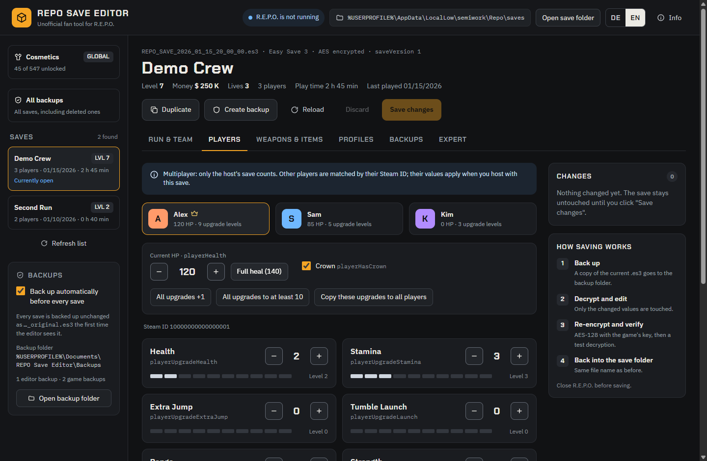
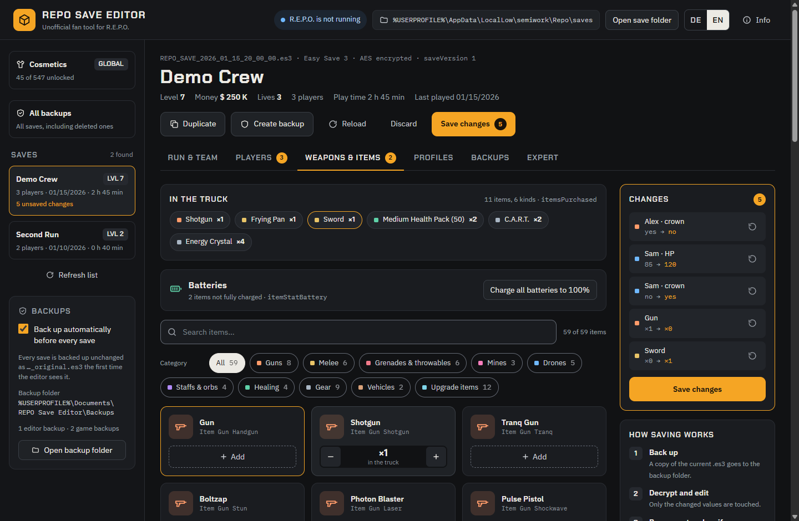
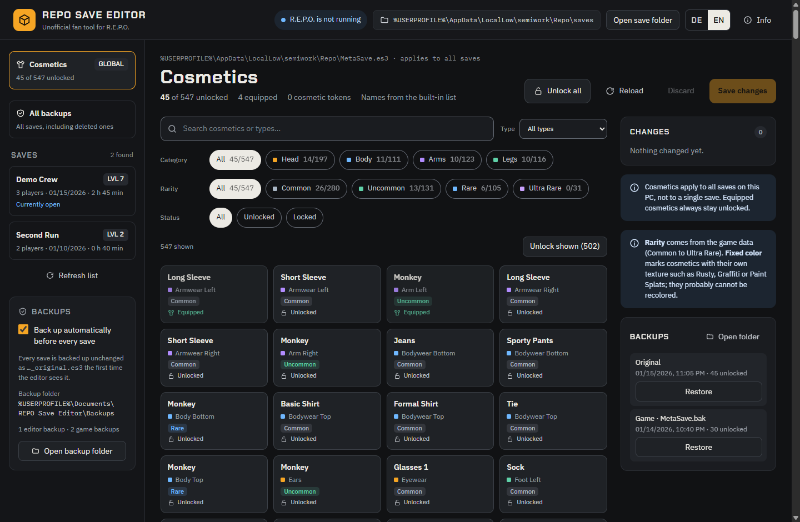
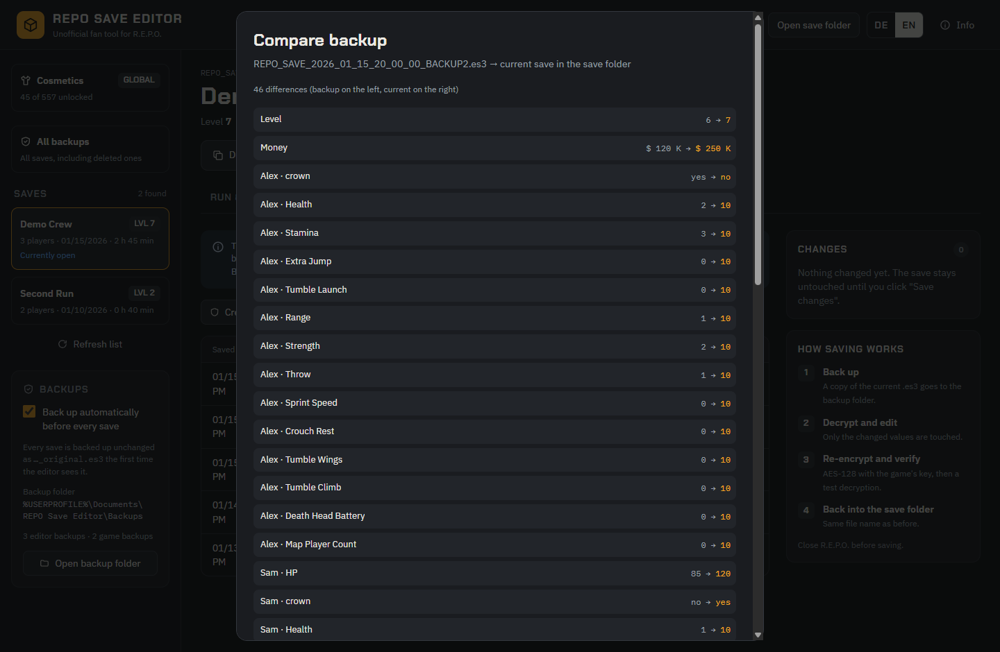
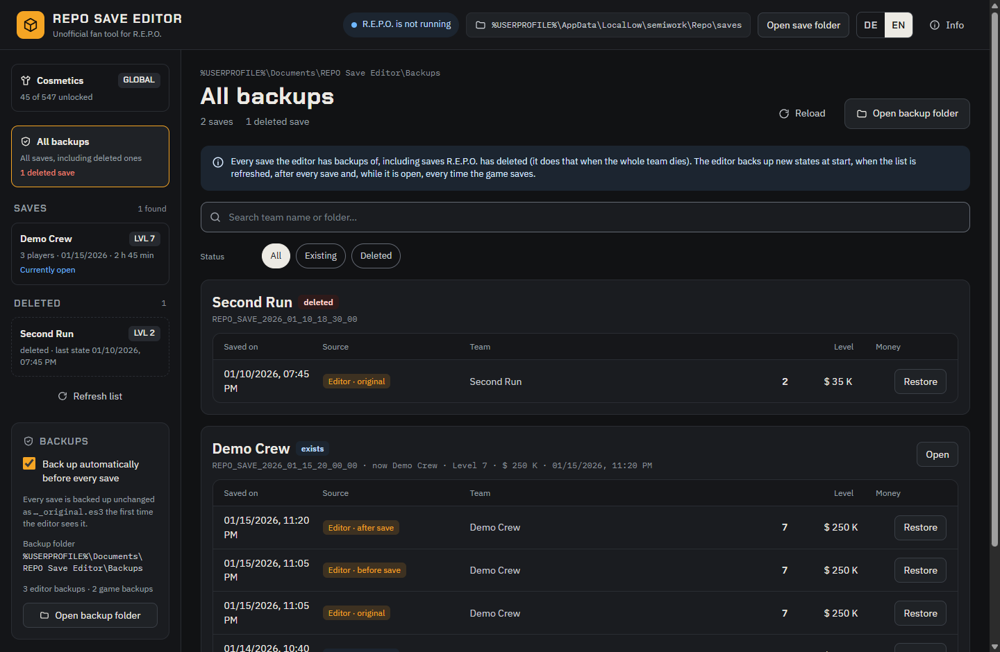

Unofficial fan tool for R.E.P.O. · Windows
Save editor for R.E.P.O.
Back up, edit and restore your R.E.P.O. save games: run values, player upgrades, weapons and items in the truck, and all 547 cosmetics. Every save is backed up before anything is changed.
- Free and open source (MIT)
- English and German
- No telemetry, no internet access

What you can edit
Pick a save, change values, check the list of changes, save. Every change is listed with "before → after" and can be undone on its own before anything is written.
Run & team
Team name, level, money, lives, charging station and total haul. Reset the upgrade purchase counters that drive shop prices.
Players
All 13 upgrades per player, from Health and Stamina to Tumble Wings and Map Player Count, plus current HP, "Full heal" and the crown.
Weapons & items
Put any of the game's 59 items into the truck or take them out, and recharge batteries.
Cosmetics
Unlock single, filtered or all 547 cosmetics. Filter by category, type, rarity (Common to Ultra Rare) and status.
Backups
All backups of all saves in one list, with team name, level and money. Compare any backup with the current save and restore it with one click.
Profiles
Built-in quick profiles and your own, applicable to any save. Duplicate makes a new slot to try things safely.
Expert mode
Edit the complete save as JSON. Values can change, but the structure of the save stays intact.
Two languages
English or German, switched at the top right. Without a choice the Windows language is used.








Bring back a save the game deleted
R.E.P.O. deletes a save when the whole team dies. The editor keeps its backups: deleted saves show up on the left under Deleted, and All backups lists every backup of every save with the team name, level and money. Restore creates the deleted save again, so it shows up in the game.
The editor backs up every new state of a save when it starts, when you refresh the list, after saving and, while it is open, every time the game saves. Keep it open while you play, and every level reached is backed up.


Careful with your saves
- The first time the editor sees a save, it keeps an unchanged copy of it.
- Before every save the current file is backed up, and the saved state right after (unless you switch this off). Before a restore the current file is always backed up.
- Saving only happens when R.E.P.O. is closed and the game has not changed the file since it was loaded.
- After encrypting, the file is decrypted again as a check; only then is it written, in one step. Only values you changed are touched.
- Nothing is sent to the internet: no telemetry, no update check, no external resources.
- Current releases are built and tested on GitHub from the published source code, with a build provenance attestation you can verify.
Install
- Download
REPO-Save-Editor-Setup-<version>.exefrom the latest release and run it. - The installer is not code-signed, so Windows SmartScreen may say "Windows protected your PC": click More info → Run anyway.
- By default it installs for your user only, without admin rights, and creates desktop and Start menu shortcuts. Uninstall via Windows Settings → Apps; your backups and profiles are kept.
Requires Windows and an installed copy of R.E.P.O.: the editor reads the password of the saves from the game files. Close R.E.P.O. before saving.
Questions
Where does R.E.P.O. store its save files?
In %USERPROFILE%\AppData\LocalLow\semiwork\Repo\saves, one folder per save. Unlocked cosmetics are in MetaSave.es3 one folder up. The editor keeps its backups in Documents\REPO Save Editor\Backups.
My whole team died and the save is gone. Can I get it back?
Yes, if the editor has a backup of it: open All backups or the Deleted section on the left and click Restore. Keep the editor open while you play, then every level reached is backed up.
Does it work in multiplayer?
Only the host's save counts. Other players are matched by Steam ID, so edit the save on the PC of the player who hosts.
When do new items show up in the game?
Items put into the truck appear when the next level loads. Cosmetics apply to all saves on your PC, not to a single save.
What happens after a game update?
The item and cosmetic lists are read again from the game files automatically. If the save format itself changes, the editor refuses to read a save instead of damaging it.
Why does Windows warn about the installer?
The installer is not code-signed, so Windows does not know its publisher. The source code is public, and current releases are built on GitHub with a provenance attestation: gh attestation verify <setup>.exe -R Firetoox/REPO-Save-Editor shows that the file was built from the published code.
Get the editor
Free, for Windows, in English and German.